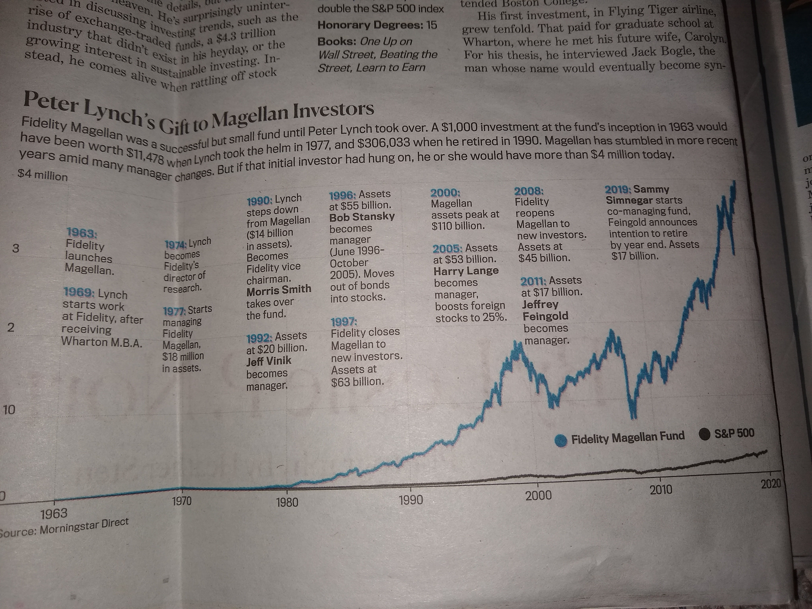
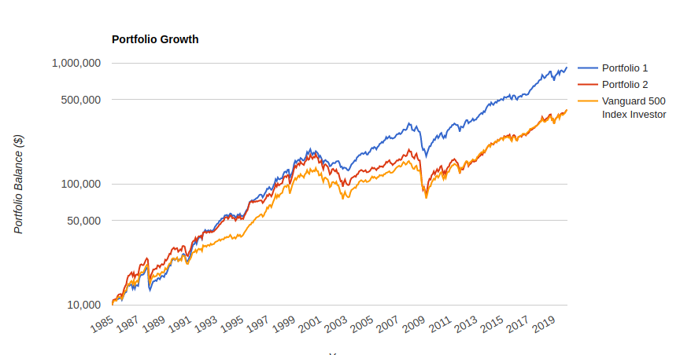

Table of Contents
Stock Picking
Of debatable benefit according to ERN. Also I don't want to do the research, but would rather work on tech/other things. But learning about businesses is kinda fun too.
Ways People Lie
Magellan “performance”: 
{kind=link}
But if you don't back-date it to include Lynch's performance…
.
{kind=link}
- Link here
Clone
But Mohnish Pabrai and folks seem sufficiently picky and spends multiple days figuring out the story for a stock. And still screws up sometime?! Why not just copy/“clone” and see what happens?
Dataroma is a must-have. Historical 13F info, all in one place with recent articles on each “guru”. But doesn't have performance.
I just want a screener that will let me do custom metrics. Combine P/E ratio and book value and … into one sorted metric. Bam, done.
- Download TradingView data to csv?
- Tiingo looks good, but only 500 unique stocks / month.
- Quantopian Let's try it again, this time I have some examples too. Mostly just look at historical data and see what happens to low p/e and low whatever companies. But … do I really want to?
- AAII historical 10-year returns are … meh (up to 25%) over S&P 500 (11%). https://www.aaii.com/stockideas/allstrategies.
Easy Picks
- Credit card companies, dang. Easily 2-5X the S&P 500. here
- No capital costs hardly, 40% profit margins, etc.
Patrick O'Shaughnessy
Millenial Money
I am a 26 year old with zero investing knowledge who read Patrick's book about a year ago. The book was a great read and inspired me to learn more about investing. By the end of the book I was completely sold on Patrick's strategy, as everything he said made sense, seemed credible, and most importantly seemed attainable for a young first time investor with a relatively small income. Seemed straight forward: save about 10% of your income to invest and follow the buy/sell rules diligently. Not so easy. First I realized that being Canadian was a major setback as being an individual investor means large fees for international stocks. Next and most importantly I found that the only way to follow Patrick's screen was to join the AAII where he mentioned the screen would be posted. After joining I found that his screen has not been posted as one of the site's stock screens. Instead the only way to follow the screen is to subscribe to Stock Investor Pro, an additional $200 over the $50 annual membership fee. Kind of daunting when the comments on implementing the strategy in Stock Investor Pro make it seem much less accessible than Patrick makes it sound in his book. All in all I learned a great deal from the book, but am very disappointed with how difficult implementing the seemingly simple strategy has proven. I have searched the internet (including the forums of this site) for any info on people who have successfully implemented the strategy and have only found more frustrated millennials. I'm left wondering if the whole book wasn't just an advertisement for Stock Investor Pro… If anyone has had the opposite experience, I would love to hear about it…
Mohnish Pabrai
Copying from his Free Lunch Portfolio: http://www.chaiwithpabrai.com/blog/2019-free-lunch-portfolio
Recommends using ValueLine for researching stocks. But hard to set up programming code stuff.
Feels that 40-50% returns should be doable for a small asset manager. He can't pick them because of his size. Small and micro caps.
- But, who and why? I don't really want to be the one doing it, unless it's important to do (for learning).
- There are mispricings in the market because investors in general don't want to wait for their returns past one quarter and don't have great analytics.
- Want to wait for the super obvious 3-4 good ideas in a year and hit the almost guaranteed home run. Instead of diversifying out the wazoo.
- Can follow his 13F filings at Dataroma and his india investments at RateStar.in. What about 13F equivalents for other countries?
IPSCO, 1/3 of market cap in cash on balance sheet, and 2 years of contracts ahead.
- Uncertain business (couldn't see out more than a few years), but risk was very low. So great cheap investment.
India Investing
In 2014, QFI and other stuff combined to be Foreign Portfolio Investor. Great set of notes by Deloitte (https://www2.deloitte.com/content/dam/Deloitte/lu/Documents/financial-services/performancemagazine/articles/lu-foreign-portfolio-investment-india.pdf), but main point is there are:
- New regulations to keep up on (10% capital gains)
- Need to file tax return every year
Here's another helpful document from StackExchange. https://money.stackexchange.com/questions/125912/is-it-possible-for-foreigners-to-buy-indian-stocks
Sounds like a lot of hand-holding that I don't really want to do in order to make 5X my money, hopefully. He's been wrong before too.
Can invest by using Interactive Brokers. Not sure what requirements are for local bank account, etc.
Qualified Foreign Investor. Can only hold up to 10% of the stock of a given company. But doesn't look like there are minimums.
- Non-Resident Indian (I am not one) seems an easier path.
Can use Upstox for free. https://upstox.com/. Another with a down review is Zerodha.
- Upstox NRE accounts https://upstox.com/help-center/nri/frequently-asked-questions-nri/6498-types-of-accounts-for-nris/, need a PIS account (free) with YES bank or another one. https://www.yesbank.in/personal-banking/nri-banking/investment/portfolio-investment-schemes
Brokerages
Want individual tax lots for tax loss harvesting and tax gain harvesting (in retirement, but also for Donor-Advised Fund (want to donate maximally appreciated shares))
- Note dumb MINTAX doesn't easily allow tax gain harvesting.
ACATS Transfer
M1 Finance: https://www.m1finance.com/ACAT_Form.pdf (has Apex broker number and such)
Fidelity
No outgoing ACATS charge. Fractional shares. Can choose tax lots or mintax.
Bad
Margin rates are 7%, higher than M1 but hopefully insignificant in the short run.
Doesn't support buying underweight allocations automatically, I don't think.
Charles Schwab
Might switch over from Robinhood once they go to fractional shares. Starting to release free trades, and they do tax lot minimization for you.
M1 Finance
Excellent for fast rebalancing, i.e. following the “Breaking The Market” recommendations weekly.
Lots more info here on how M1 makes money. https://www.m1finance.com/blog/how-m1-makes-money/
Thankfully the $.02 minimum SEC fees are only levied on sales not on purchases. Great!!
However, really annoying to withdraw savings at a later time and pick the optimal tax lots you want to use. Have to:
Robinhood
Gets paybacks for trading for order flow from market makers like Citadel. They don't want to be overrun by a big institution (take on a huge sale 100 shares at a time and can't sell it at the price they bought it). https://www.bloombergview.com/articles/2016-02-25/-flash-boys-exchange-isn-t-about-the-little-guy
- So they do offer a price improvement because they pay for knowledge of the retail orders (small and innocuous) and offer a price improvement too.
Robinhood places your orders via the exchange APEX. APEX gives Robinhood rebates for this. In turn, APEX sells your data feed to HFT to front run your order or possibly uses their own dark pool. Robinhood does not use IEX. Use a limit order and remember you will not get the best possible fill price. At least the commission is “free”.
- IEX = an exchange that doesn't give HFT's an advantage. However, not necessarily a hero either???
- How are limit orders able to be manipulated?? Something about fill prices…
- Yeah, if you want to buy at $50, but they can get it at $49.98 or higher before it gets to you, then they get the $.02 instead of you and the buyer meeting in the middle at $49.99 and the scalper not getting anything. I thought the SEC protected against this…
Questions for them, maybe on phone?
- I see that my orders are routed through Apex. How much am I losing when I do this? (As they sell the order info to HFT's and my only option is to buy / sell at market price, which means I'll get scalped, somewhat!). Source and APEX gets average of $.002 per share. https://www.m1finance.com/Order_Routing_Disclosure_and_Report-2017Q2.pdf
- Maybe it doesn't matter until you're trading 100s of shares at a time and a $7 etrade fee is worth it. But at that point, you might as well switch to Robinhood and do limit orders, etc.
- What is the timeline for fixing the FIFO stuff?
- That really betrayed my trust! It seems an obvious oversight! What else am I not knowing about?
- There are lots of features that Apex provides, supposedly, that other fintech companies are using. Do you have to pay more to use them?
- The menu on Apex's website is so kloogy as it redirects to older parts?? It's not that hard to do a redesign…
- How can a limit order be manipulated?
- https://news.ycombinator.com/item?id=11666509. But want to understand.
Sign up with ERN link: https://mbsy.co/lWzbh. DONE!
Perfect for automating allocating incoming money and “force” rebalancing if you so choose https://support.m1finance.com/hc/en-us/articles/360001379367-How-M1-Finance-Trades. Also free transactions, fractional shares, 3.5% loan on 35% of your capital, and can probably api it to get non-dividend stocks to some extent (https://earlyretirementnow.com/2018/05/30/idea-for-a-new-etf/).
- You can take 50 companies from the S&P 500 and it highly approximates the S&P 500. Or just pick up Berkshire Hathaway, etc.
Probably can't transfer VTSAX into it without incurring capital gains, so maybe wait when you're going to sell stuff and try it out with some new money?
“Tax minimization” strategy:
In contrast, the M1 tax minimization feature aims to automatically make choices that will help you tax-wise when sales are part of rebalance. For example, they will sell shares that have a loss first, shares that have a long-term gain second, and shares that have a short-term gain last.
- Good test would be to sell something that's gone down and make sure that they register a taxable event on the books, and that it's ….
- Maybe think about it a little first, then call up their support and make sure they're doing the right thing. Don't want a wash sale, etc.
- You can now sell parts of pies individually. Not sure why you'd want to do that though. Maybe to force the tax loss harvesting. Rebalancing will do the same thing basically.
- Unfortunately it looks like Apex is doing FIFO…

Likely won't do capital gains harvesting (selling only large capital gains lots while in 0% tax bracket to raise tax basis): https://www.bogleheads.org/wiki/Tax_gain_harvesting
- Why only the large capital gains ones? I don't think it matters what they are as only the capital gains will be counted as you already paid taxes on them initially so they aren't counted as income
- Also capital gains aren't subject to wash sale rule
Transfer account from Vanguard using an in-kind transfer. Out of vanguard is free and coming into M1 is free and supposedly keeps tax lots. However, does VTSAX (mutual fund) transfer to a mutual fund in M1? https://www.m1finance.com/blog/transfer-stocks-between-brokerages/
Main thought is whether it’s worth splitting VTSAX up. And 2,
Also Apex is providing the backend to just about every thingy out there (Robinhood, betterment, etc).
How much are HFT trader front running worth? Enough for free $9 trades?
https://en.wikipedia.org/wiki/Flash_Boys. Lists good criticisms that I don’t quite understand yet. Like “HFT’s are actually helpful!” hm…